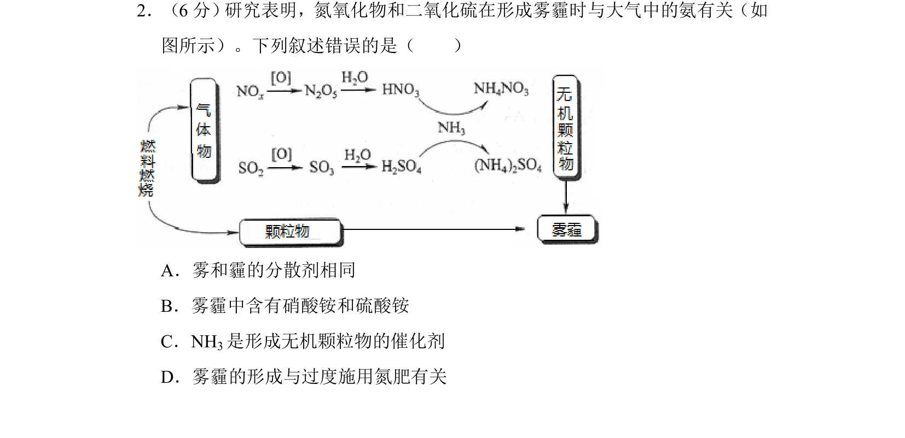
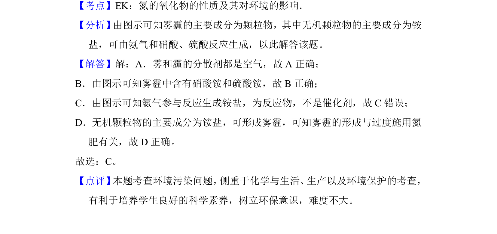

考点：氮氧化物的性质 分散系 催化剂 环境污染

雾霾形成中氮氧化物、二氧化硫与氨的反应，考查分散剂、铵盐和催化剂等概念。

📄 原 PDF 第 2 页：
素材/真题/吉林/2008-2024·（吉林）化学高考真题/2018年高考化学试卷（新课标Ⅱ）（解析卷）.pdf
2．（6分） 研究表明，氮氧化物和二氧化硫在形成雾霾时与大气中的氨有关（如 图所示）。下列叙述错误的是（ ） A．雾和霾的分散剂相同 B．雾霾中含有硝酸铵和硫酸铵 C．NH3是形成无机颗粒物的催化剂 D．雾霾的形成与过度施用氮肥有关
【考点】EK：氮的氧化物的性质及其对环境的影响．菁优网版权所有 【分析】 由图示可知雾霾的主要成分为颗粒物，其中无机颗粒物的主要成分为铵 盐，可由氨气和硝酸、硫酸反应生成，以此解答该题。 【解答】解：A．雾和霾的分散剂都是空气，故A正确； B．由图示可知雾霾中含有硝酸铵和硫酸铵，故B正确； C．由图示可知氨气参与反应生成铵盐，为反应物，不是催化剂，故C错误； D．无机颗粒物的主要成分为铵盐，可形成雾霾，可知雾霾的形成与过度施用氮 肥有关，故D正确。 故选：C。 【点评】 本题考查环境污染问题， 侧重于化学与生活、 生产以及环境保护的考查， 有利于培养学生良好的科学素养，树立环保意识，难度不大。